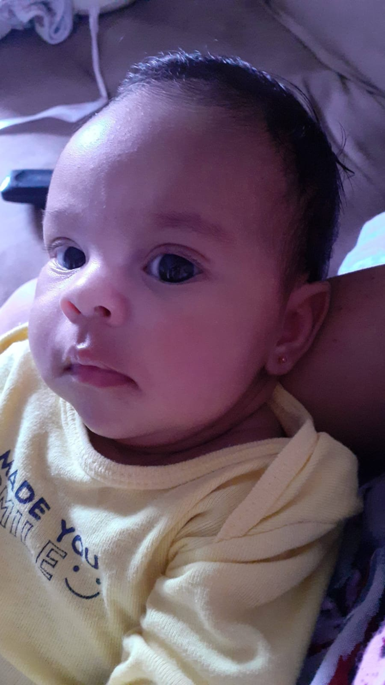
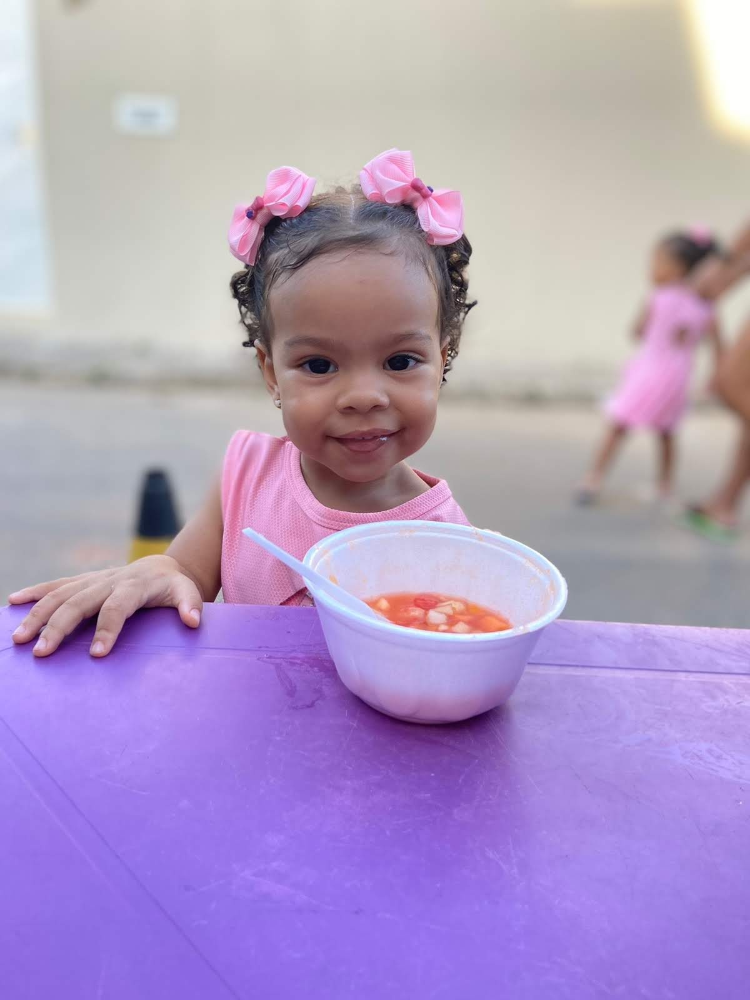
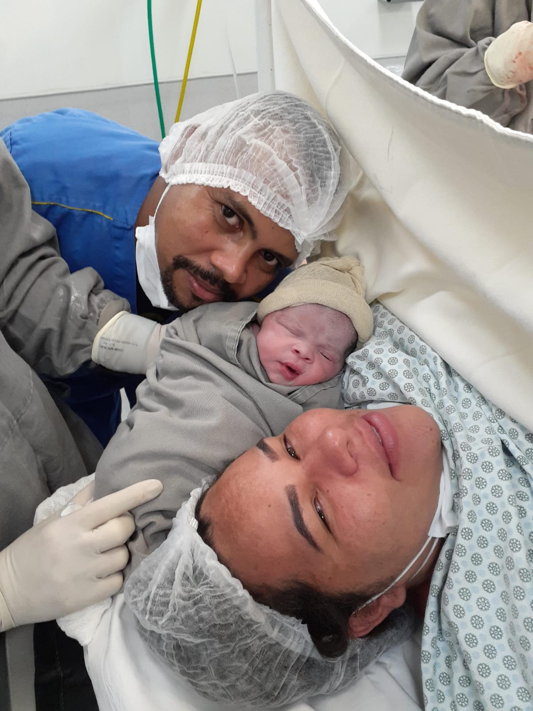
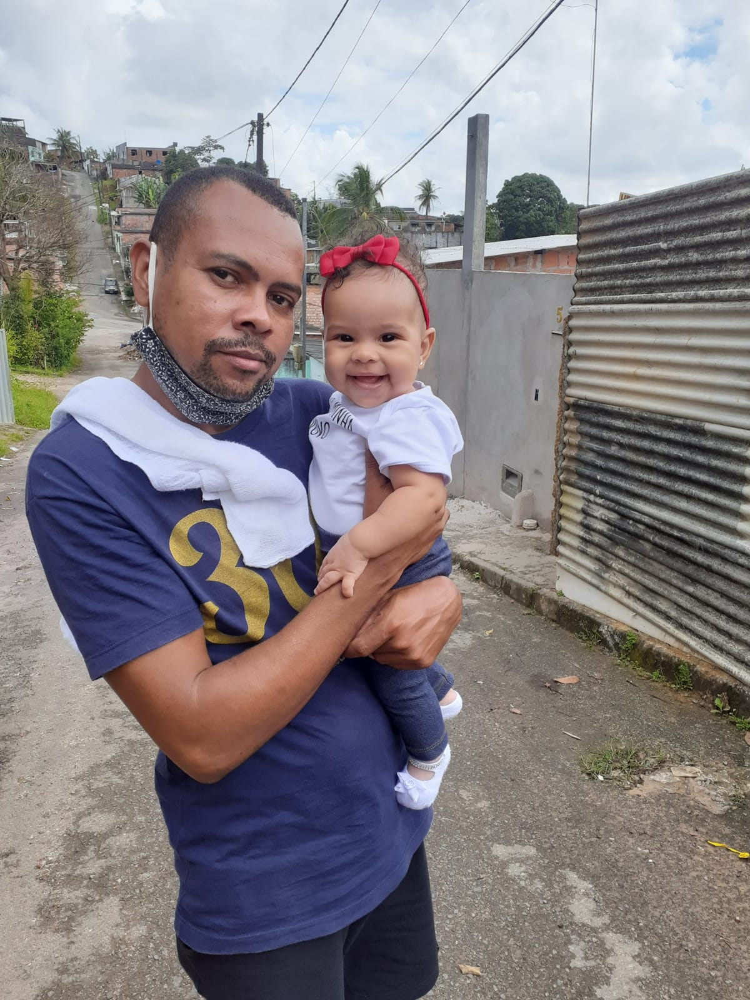
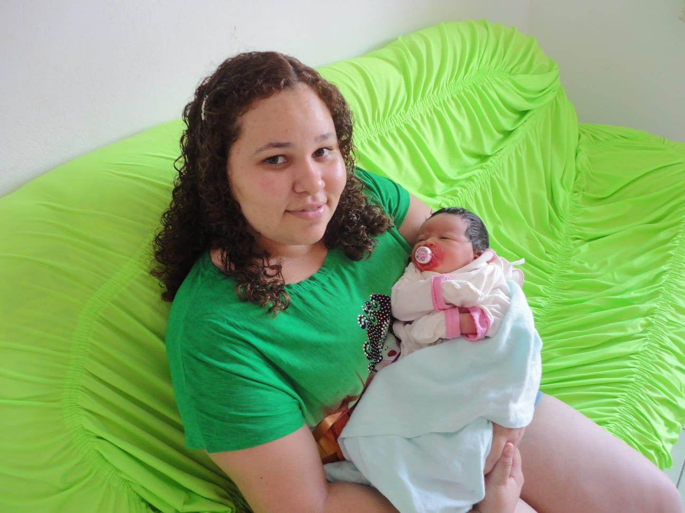
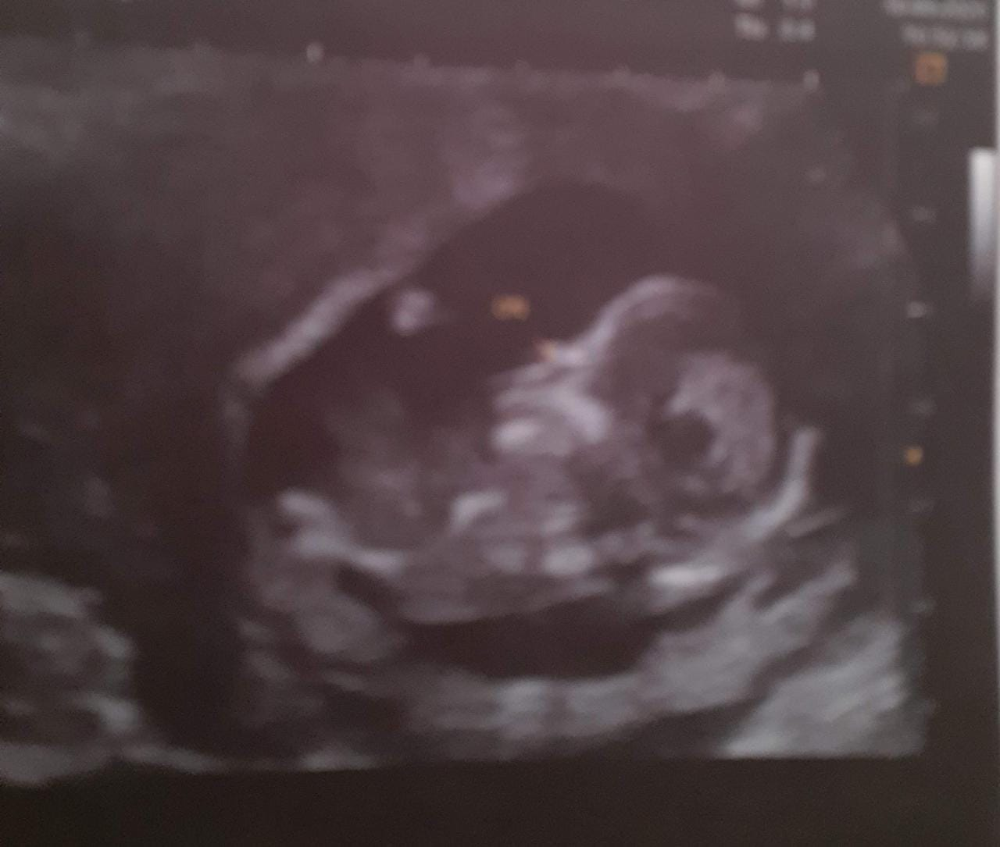

Minha história começa na adolescência, eu desde nova começei a trabalhar com minha tia;
Vendiamos de porta em porta. Era no sol,na chuva.
Nesse período, carregava o peso das sacolas E doía todas as minhas articulações.
Só que,uma adolescente com dores não era algo tão importante assim.
Domingo de manhã,fazia o trajeto de ir e vir,no sol.
Passava mal no caminho,era uma confusão. Estava fazendo drama.
Eu ficava com queimaduras feias no rosto,devido a exposição no sol.
Da igreja pra minha casa ,eram 50 minutos de caminhada.
Estou pontuando isso pode parecer irrelevante.
Mais essa informação foi útil anos depois.
Foi assim durante muitos anos.
Minha mãe ficou doente ,minha rotina ficou mais puxada.
Cuidava da minha mãe,da casa. Nunca tive ajuda de fora.
Conheci Jefinho nessa época e casamos.
No primeiro mês de casada e cheia de planos.
Retomei meus estudos.
Um belo dia,depois da aula começou o primeiro episódio de febre.
Essa febre me gerava dores fortíssimas nas articulações.
As lágrimas desciam de forma involuntária. Eu recém casada, não conhecia ninguém aqui,Jefinho trabalhava muito;
Passei uns 3 dias na cama.
Fui na emergência no hospital,me deram medicação e voltei pra casa.
No mesmo dia,eu simplesmente não conseguia andar sem mancar.
Nesse mesmo dia começou os vômitos,os enjoôs.
Jefinho arrumou minhas coisas e me levou pra casa de minha mãe.
Na cidade dela,tem uma médica muito famosa lá.
Contamos da febre, fiz um teste de gravidez.
Porque vomitava absolutamente tudo que comia.
Não estava grávida.
Ela aconselhou a me levar na emergência se ainda no final no dia,a febre não cedesse.
Não cedeu. Esqueci de falar a temperatura dessas febres. 39.9 mais normalmente 40.0
Minha boca partia.
Eu tremia, parecia uma convulsão. A sensação tinha era que ia morrer.
Fui pro hospital a noite com minha mãe ainda em recuperação de 3 cirurgias recentes 🤦♀️
Fiz exames. Infecção urinária,infecção no sangue.
Dei entrada na internação, nesse hospital eu tinha direito a acompanhante.
Fiquei 15 dias nesse hospital ,e a febre não cedia. As dores não cediam.
Tudo era um sofrimento, o que me alimentava era o soro.
Enquanto os médicos de cada plantão,
tentava um medicamento novo. Exames diários eram feitos. Todos os exames disponíveis lá,eu fiz.
15 dias não podiam fazer mais nada,
fui transferida pra o hospital irmã Dulce. Mais exames. Primeiramente,
suspendeu todas as medicações.
Em mim tinha iniciado uma hepatite medicamentosa.
Ou porque sou detalhista?😬 e nem tô falando de emoções 😅
Se adicionar emoções,vai ser horas escrevendo.
Passei 2 meses internada. Enfim, chegou o diagnóstico.
Aquele dia mudou minha vida.
Com elas palavras: Olhe,Manu! Baseado no seu histórico médico, de seus relatos e resultados de exames.
Concluímos que você é portadadora da Síndrome de Still
Talvez apartir de agora,tenha emoções envolvida.
Sem dúvida foi uma das fases mais difíceis da minha vida. Remédio somente no último caso,apenas dipirona.
As febres tomaram proporções maiores. Os vasos sanguíneos dos meu olhos se rompiam. Perdi o movimento das pernas.
Não me mantia em pé. A solução foi fralda descartaveis,a maioria dos meus banhos eram na cama.
Mais e mais exames,
minha locomoção era de cadeira de rodas.Nesse momento da minha vida,estive completamente sozinha.
Eu abordava as visitas dos outros pacientes pra trocar as minhas fraldas.
Minha mãe e meu pai ás vezes passava alguns dias pra me visitar.
Antes eu tinha muitos "amigos", aquela situação mudou minha visão em relação a amizade.
Preciso corrigir, nunca estive sozinha Deus colocou pessoas maravilhosas na minha vida.
Acompanhantes de paciente, pessoas que estavam também lutando como eu.
Mais tinha 2 pacientes e 1 enfermeiro em específicos que foram enviados por Deus naquele processo.
Quando a febre atingia temperaturas altíssimas,
e eu já alucinando( preciso falar sobre isso)
Era aquela correria, esse enfermeiro🥰 enchia varias
luvas de água bem gelada e espalhava por cima do meu corpo.
Essas duas pacientes me colocam na cadeira de rodas e me colocava debaixo do chuveiro. No fundo ouvia elas conversando:
Manuela,você não vai morrer! Eles vão querer entubar ela,Telma( as duas conversando entre si)
Gratidão por elas.
Fui designada pra uma médica 🥰 e ela me tratou de forma muito humana.
Em uma de nossas conversas, comentei que não gostava de "tomar " sol.
Expliquei das dores e das queimaduras que aconteciam desde a adolescência.
Isso deu a ela uma nova visão sobre a minha saúde.
Me deu uma guia de encaminhamento e recebi alta.
Minha mente bugou🤦♀️
Como assim? E agora?
Ela muito gentil,falou assim: Essa síndrome não tem cura,
seu tratamento vai ser até o fim de sua vida,será a base de corticoide e imunosupressores.
Eu era totalmente leiga.
Perdida,não consigo encontrar outra palavra. Sem chão.
Já ouvi essa descrição de pessoas que foram diagnóstica com câncer, me senti exatamente assim.
É surreal o tanto de coisas que passavam pela minha cabeça.
Nesse período que perdi o movimentos das pernas.
Minha fé comevou a ser exercitada. Foram horas de negociação com Deus.
A forma como Ele foi apresentado pra mim,precisei desconstruir naquele momento. Foram minhas primeiras experiências profundas com Deus.
Eu sentia Deus me carregando, eu sentia o toque dele me segurando. Eu sentia o calor do abraço.
Não sei se você já viveu essa experiência,diário!
Mais eu senti Deus me preparando pra tudo que eu ia viver apartir dali.
Deus mostrou-se pra mim com amor,consolo e acalento.
Eu era o rato da igreja,nunca tinha vivido aquilo. Eu conheci Deus de perto no leito do hospital.
O diagnóstico,eu nao sabia como era isso,ninguém tinha ouvido falar. Eu não sabia muito bem o que fazer com aquela informação.
Nessa época fui buscar conhecimento sobre isso, minha vida girou em torno disso.
Porque as pessoas queriam respostas. Foi uma fase que as pessoa não usava os mesmo copos e pratos que eu.
Eu sentava no banco da igreja e ninguém sentava do meu lado com medo de uma contaminação.
Uma vez segurei um bebê e a mãe levantou dos primeiros banco da igreja pra tomar dos meus braços.
O movimento das pernas voltou, sem intervenção médica. Saí do hospital caminhando.
Eu comecei meu tratamento, eram medicamentos fortes. Bastante usando nos processos de quimioterapia. Eu sempre amei crianças mas
precisei assinar um termo me comprometendo a não engravidar.
Nesse processo foi o que mais doeu, meu sonho era ser mãe
Meu quadro de saúde era o seguinte:
eu não tomava banho sozinha,Jeginho me dava banho, me vestia ,fazia 90% das tarefas de casa,eu não conseguia segurar absolutamente nada,chorava e gemia de dores.
Eu acordava aos prantos de dores paralisantes.
Tinha a questão emocional por trás disso. Que talvez seja irrelevante agora.
Mais concluindo 🤭
Fiz o tratamento durante anos,já perdi cabelo.
Ninguém sabe disso,não saia de casa. Acho que passei uns 4 anos sem sair de casa.
Minha vida estacionou.
Desde o diagnóstico até o fim do tratamento.
Coloquei uma coisa no meu coração.
Diagnóstico não é sentença. Me recusei a viver assim
Vou fazer o que eu puder pra reverter isso, então eu parei de viver em torno daquilo,
ia nas consultas, fazia bateria de exames a cada 3 meses. ( falar sobre finanças depois)
Tomava meus 8 comprimidos diariamente.
Mais aprofundei meu relacionamento com Deus.
Eu pedia a Deus um milagre, humanamente falando era impossível.
Mais comecei a mentalizar.Estou curada, estou curada.
Mudei alimentação. Parei de me enxergar como vítima.
E meu processo de curar começou assim.
Lembro da minha última consulta. A sala estava cheia de estagiários,
me sentia um bicho no zoológico.
O tratamento não estava funcionando, ferritina alta. Dores e febre.
O jeito era recorrer ao tratamento à base de remédios biológico.
Fugia da minha realidade financeira.
Nesse dia outro diagnóstico: Fibromialgia.
Sai de lá determinada. Não me ache maluca, um dos motivos pelo qual não conto isso🫣
Mais eu sai de lá determinada a nunca mais voltar lá.
Você abandonou o tratamento? Não, eu entendi que todas as minhas
conversas com Deus precisava de uma ação da minha parte.
Nos meses seguintes fui diminuindo as doses dos medicamentos.
Até o que dia que parei totalmente.
A medida que fui tirando,as dores sumiram,a febre. Meus exames normalizaram.
Nunca mais voltei lá, e quando me perguntam eu falo que o médico errou no diagnóstico 🤭
Fiz um resumo de uma forma bem singela, pra não ser uma leitura tão enfadonha.
A doença não me causou infertilidade, mas tive depressão e
síndrome do pânico os remédios poderiam causar sequelas dráticas para o bebê e o aborto.
Na pandemia de 2020 eu engravidei e perdi , em 2021 eu engravidei novamente e tive que ficar de
repouso absoluto e foi assim que minha pequena Bianca chegou ao mundo, saudável e perfeita.
Deus é perfeito em tudo que faz, seu amor e misericórdia nos alcançou
e pela graça somos salvos, nada acontece por acontecer,
tudo que acontece em nossa vida tem um grande propósito. Tudo é para sua glória. Amém